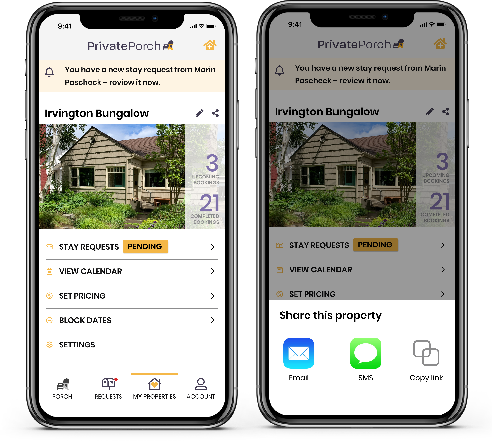
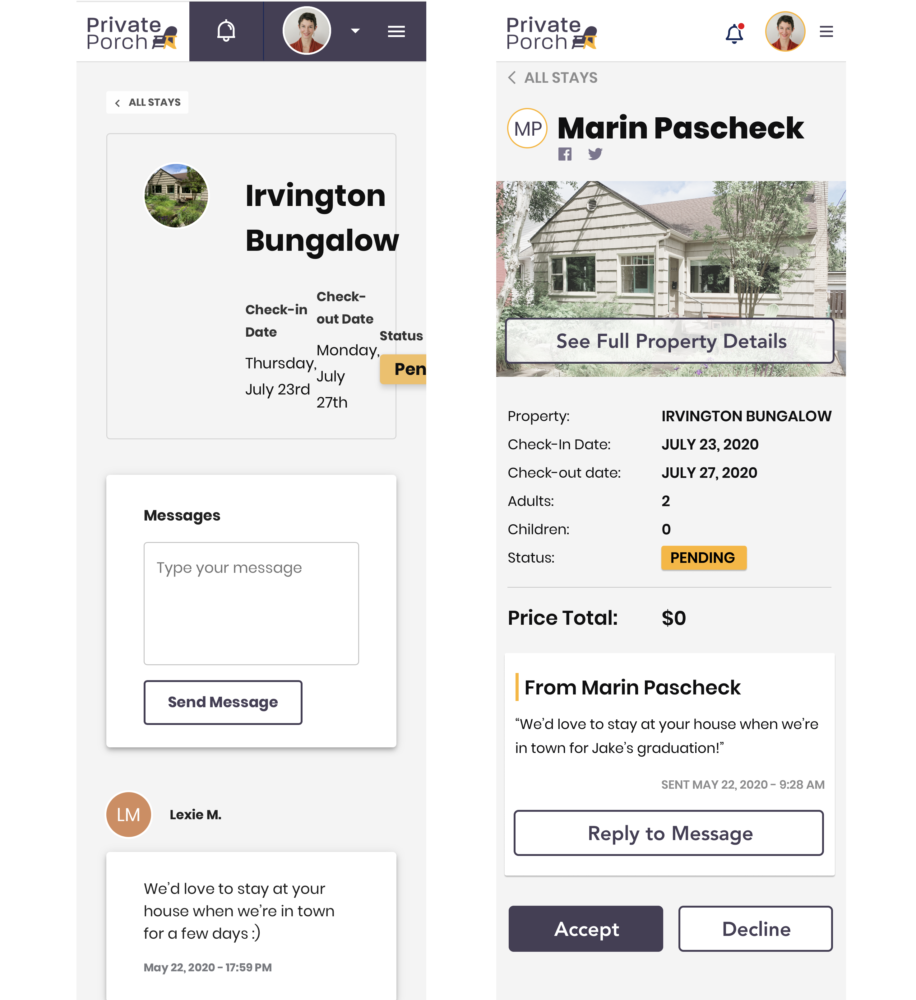
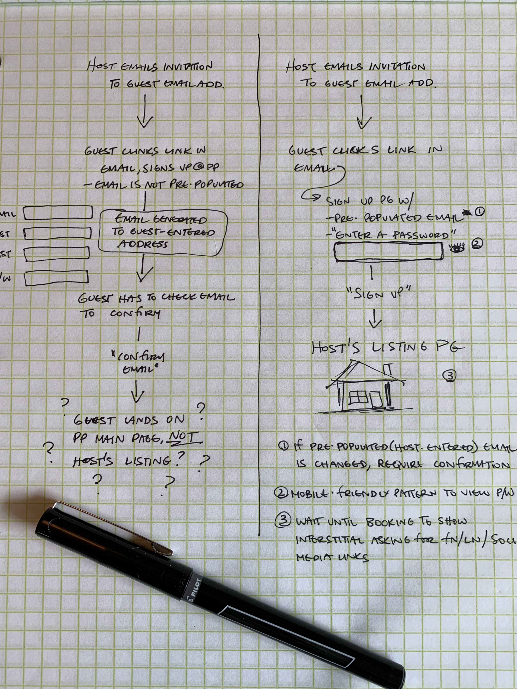

Private Porch Mobile Design, 2020
Skills
- Sketching
- UX design
- Mobile UI design
Tools
- Figma
Artifacts
- User flows
- Responsive web and native mobile mockups
Problem
While the current Private Porch website is responsive, it isn’t optimized for mobile use cases. Hosts want to use handheld devices to check availability, approve stays, and perform other tasks on the go. Guests also need to be able to accept email invitations and interact with property listings on a mobile device with as little friction as possible.
Solution
After speaking with the company’s co-founder and doing a heuristic evaluation of the existing website, I narrowed down the scope of a mobile MVP to the following areas:
Universal/mobile accessibility
- Larger and more intuitive click/tap targets, including hero images to view listing pages, and avatars to view host and guest profiles.
- More efficient display of information on mobile using Material Design.
- After providing a responsive mobile web interface, the company can use customer feedback and analytics to determine the scope of a native app.

Emphasis on essential features for hosts
- When a potential guest requests to stay at a host’s property, the host should receive a notification, and be able to clearly understand the request, learn more about the guest, and respond from anywhere.
- Hosts should be able to easily share a link to their listing from a handheld device.

Reduced signup friction for guests
- Current signup process contains more steps than necessary, and is especially onerous on a handheld device when a guest has to switch between apps multiple times.

Result
By understanding the iterative nature of startup development, I was able to propose lightweight improvements to the mobile web interface that will provide immediate utility to customers, as well as a learning opportunity for future development.
More farsighted native mobile app designs can provide a roadmap for longer term work as well as illustrations for investors of what the product can become.
